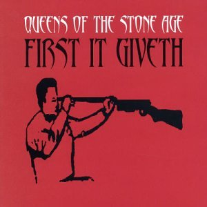
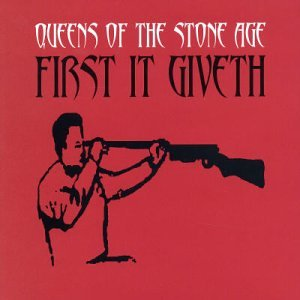
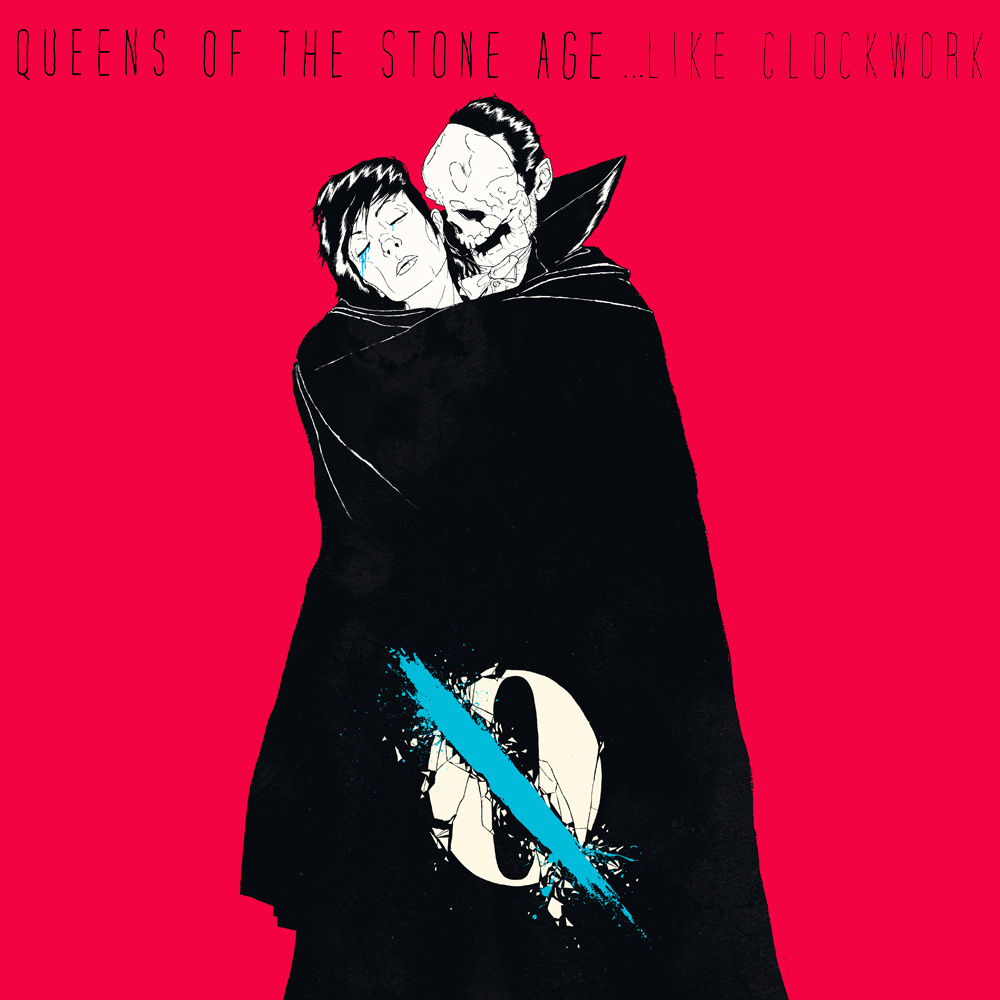
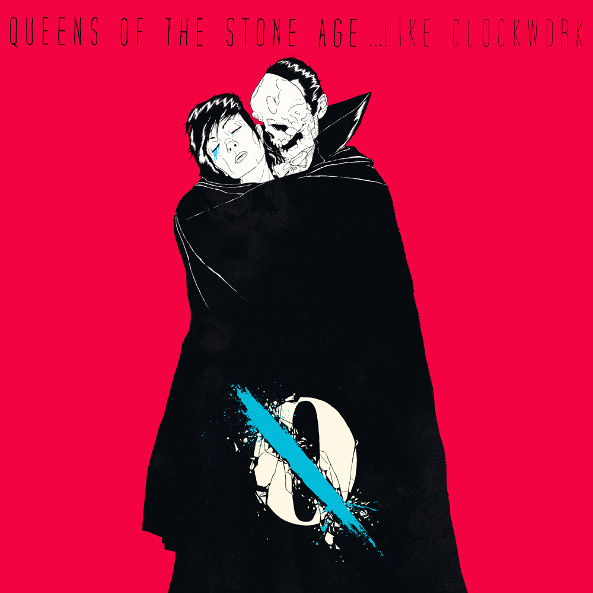

Queens of the Stone Age
Sobre a banda:
Queens of the Stone Age (também conhecidos pelo acrônimo QotSA) é uma banda estadunidense de rock formada em Palm Desert, Califórnia em 1996. É muito conhecida por popularizar o gênero que até os anos 2000 não era muito considerado, conhecido como stoner rock e pela sua constante mudança de integrantes, sendo o único integrante original o vocalista/guitarrista/compositor da banda, Josh Homme. Antes do surgimento do Queens of the Stone Age, existia uma banda californiana chamada Kyuss que, após ser apadrinhada pelo produtor Chris Goss, partiu do completo anonimato para tornar-se ícone cult da cena heavy metal americana, chegando inclusive a figurar como o principal expoente do sub-gênero stoner rock. Muitos talentos fizeram parte da formação do Kyuss durante sua existência. Entre eles estavam: Josh Home, Nick Oliveri, John Garcia e Alfredo Hernandez. No entanto, apesar da popularidade o Kyuss se dissolveu em 1995 e o líder e guitarrista Josh Homme mudou-se para Seattle. Em Seattle, Josh ingressou no Screaming Trees como segundo guitarrista durante a turnê do álbum Dust de 1996, tendo inclusive participado do festival Lollapalooza em sua última edição com o Trees, tocando ao lado de bandas como Soundgarden e Metallica. A partir de 1997, com as atividades do Screaming Trees se tornando cada vez mais esparsas, Josh encontra tempo suficiente para trabalhar em um projeto próprio. Foi o início da série Desert Sessions, projeto que permitiu a ele se expressar com maior liberdade e experimentalismo. Logo em seguida, Josh resolve montar outra banda, o Queens of the Stone Age.

 

 
